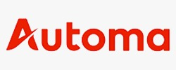

Analisi e strategia
Monitoraggio periodico del Suo sito, con un'analisi tecnica a cadenza concordata, una strategia di intervento e KPI definiti insieme.
Niuexa aiuta le aziende a misurare e migliorare la propria visibilità nelle risposte di ChatGPT, Claude e Perplexity. Il percorso AEO/GEO parte da un set di domande reali, documenta citazioni e fonti, individua i gap tecnici ed editoriali e produce un backlog prioritizzato con KPI e cadenza di verifica.
Costruiamo una baseline verificabile su ChatGPT, Claude e Perplexity, analizziamo quali fonti sostengono le risposte e trasformiamo i gap in un piano tecnico ed editoriale misurabile.
Secondo Similarweb, tra giugno 2025 e maggio 2026 piattaforme AI come ChatGPT, Claude e Perplexity hanno portato in media 770,7 milioni di visite al mese ai siti web, il 117,4% in più dell'anno prima.
Il percorso in tre passi
Nessuna promessa di posizionamento: misuriamo prima e dopo, con le stesse domande.
NIUEXA S.R.L. è una società di consulenza AI con sede legale a Torino e un ufficio a Milano. Lavora con le aziende italiane su tre fronti: automazione dei processi con agenti AI, visibilità sugli assistenti AI (AEO/GEO) e formazione pratica.
Sulla visibilità AI applichiamo lo stesso metodo dell'automazione: prima misuriamo, poi interveniamo. Registriamo come gli assistenti rispondono oggi, correggiamo le evidenze che mancano e rimisuriamo con le stesse domande.
Niuexa è controllata da Libera Brand Building Group, attiva da oltre 20 anni nella comunicazione digitale, ed è membro di AUSED.

AutomaPartnerIn questo video dimostrativo mostriamo come analizziamo la visibilità AI di un sito e come individuiamo gli interventi prioritari.
Vuole un primo riscontro sul Suo sito? L'analisi della visibilità AI è gratuita.
Verifichi la visibilità AIPer le aziende che vogliono colmare il divario con un unico interlocutore: dall'analisi all'implementazione tecnica, fino alla scrittura dei contenuti.
Monitoraggio periodico del Suo sito, con un'analisi tecnica a cadenza concordata, una strategia di intervento e KPI definiti insieme.
Eseguiamo le modifiche tecniche concordate, scriviamo i contenuti pensati per le risposte AI e aggiorniamo codice e configurazioni del sito.
Report periodici costruiti sulle stesse domande della baseline, per confrontare i risultati nel tempo, e supporto durante l'implementazione.
dedicato a queste attività
con un piano di interventi chiaro e un solo interlocutore
con oltre 20 pagine, e-commerce o SaaS
analisi e interventi a un unico fornitore
Nessuna promessa di “ranking AI”: un sistema di evidenze ripetibile per decidere dove intervenire.
Un set di domande legate a categoria, problemi, confronti e criteri di scelta, con data, motore interrogato e risposta osservata.
Citazioni, pagine del sito, dati strutturati e fonti terze vengono collegati alle risposte per distinguere evidenze presenti, mancanti o incoerenti.
Interventi tecnici, editoriali e di autorevolezza ordinati per impatto atteso, sforzo, dipendenze e responsabile.
Query set stabile, KPI, frequenza di controllo e registro delle modifiche per confrontare i risultati nel tempo senza confondere variazioni occasionali con progresso.
Approfondisca il metodo nella guida alla visibilità su ChatGPT, Perplexity e Claude oppure esplori la consulenza AI Niuexa.
Le fasi vengono dimensionate sul perimetro concordato: nessuna tempistica standard prima della discovery.
Fase 1
Concordiamo mercati, categorie e domande dei clienti, poi registriamo le risposte degli assistenti AI con data e motore interrogato.
Fase 2
Colleghiamo citazioni, pagine del sito, dati strutturati e fonti terze alle risposte, per vedere quali evidenze mancano o non tornano.
Fase 3
Ordiniamo gli interventi tecnici, editoriali e di autorevolezza per impatto atteso e sforzo, poi li realizziamo con il Suo team.
Fase 4
Ripetiamo le stesse domande a cadenza concordata e registriamo ogni modifica, per distinguere il progresso dalle variazioni occasionali.
Risposte dirette su misure, limiti, interventi e costi. Per il resto c'è la prima chiamata.
Misura come un set stabile di domande viene gestito dai motori AI in una data precisa, registrando citazioni, fonti, presenza del brand, accuratezza e variazioni tra piattaforme.
No. Le risposte dipendono da modelli, fonti e contesto che cambiano nel tempo. Il lavoro AEO/GEO migliora chiarezza, accessibilità e qualità delle evidenze, poi misura gli esiti con controlli ripetibili.
Il backlog può includere dati strutturati, architettura informativa, pagine di servizio, contenuti di approfondimento, coerenza delle entità, citazioni autorevoli e correzione di informazioni ambigue.
La prima chiamata di 30 minuti è gratuita e senza impegno. Il costo dipende dal perimetro: mercati, numero di domande, interventi da realizzare e cadenza di misurazione. Lo fissiamo dopo l'analisi, in un preventivo scritto.
Ci descriva mercati, categorie e domande dei Suoi clienti. Nel confronto iniziale definiamo se esiste un perimetro misurabile su cui lavorare.